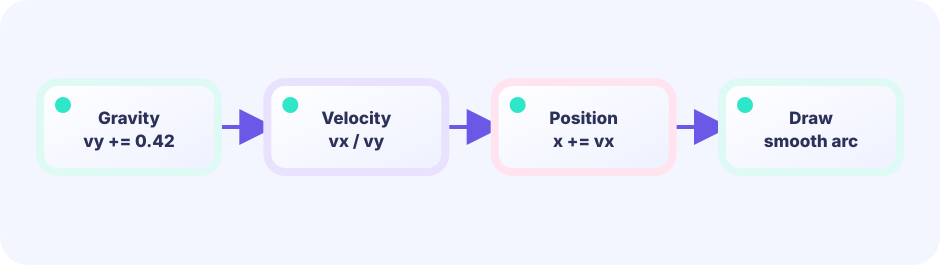
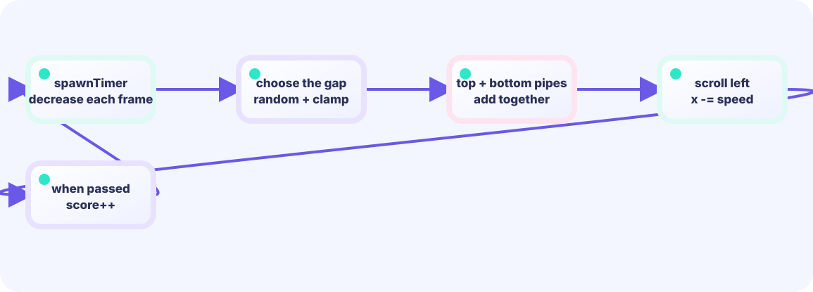

UPDATE
Input, gravity, collisions—advance the numbers (review).
func (g *Game) Update() errorLEVEL 04 / ACCELERATION IN MOTION
Tap to rise; do nothing and he falls. Play with that feeling first, then unpack why changing speed a little at a time creates a natural arc.
PLAY FIRST ↓On screen you see original hero Ebi Tenjiroh; hits still use simple shapes. Movement math still lives in the same LEVEL 01 state boundary.
LEVEL 04 / EBI FLIGHT
Click, tap, or press Space to flap. Every pipe you clear earns one point.
FIRST-TIME READER
Find where this one line is used, then follow how its value changes on screen. This is the shared game-state boundary: add rules in Update, then choose an independent presentation in Draw. The numbered steps below add one system at a time.
ONE RULE TO TRACE
Match the explanation to this line, then test the change in the game.
vy = -7.4; vy += gravity; y += vyFeel gravity
Integer-only movement looks abrupt. A value such as 0.42 lets small Update ticks build into a smooth falling arc. First change speed, then change position.


QUICK REVIEW / FROM LEVEL 01
LEVEL 01 separated Update, which advances the game, from Draw, which presents it. Here we add one new idea—acceleration—to Update.
Input, gravity, collisions—advance the numbers (review).
func (g *Game) Update() errorPaint from the current numbers (review).
func (g *Game) Draw(screen *ebiten.Image)Pick the logical resolution (review).
func (g *Game) Layout(w, h int) (int, int)DEEP DIVE / ACCELERATION
The answer is acceleration. It simply means “the amount that changes speed,” like a ball rolling faster down a hill.
Where the hero is now. The top is 0, and the number gets bigger as you move down.
birdY = 320How far and which way the hero moves each update. Negative goes up; positive goes down. velocity = -7.4 is the initial push a single flap gives—"move up 7.4 pixels this instant." A bigger number means a stronger flap.
velocity = -7.4How much velocity changes on one Update. This lesson adds +0.42 as gravity. Screen Y grows downward, so flap impulse is negative (e.g. -7.4).
gravity = +0.42TRY IT / 1 UPDATE AT A TIME
Each button press stands for one Update: add gravity to velocity, then move the hero by that velocity. Draw does not join the calculation; it only shows the current position.
“Flap” sets upward velocity to -7.4, then advances one Update.
TRY IT · GO
vy += 0.42 // gravity each Update y += vy if pressed { vy = -7.4 // jump impulse }
—
THE TWO-LINE RULE
velocity = velocity + gravitythenposition = position + velocityOrder matters inside Update. First gravity changes velocity, then velocity changes position. Repeat on each Update to make a natural jumping curve. Up is negative Y on screen.
Before you start flying, the hero gently sways up and down using math.Sin(...) (sine, a function that makes a smooth wave shape). You may not have learned it in school yet, but it is enough to think of it as "a table of values that smoothly rises and falls over time." This is purely decoration for an "idle" feel (bonus, optional)—it has nothing to do with acceleration or hit testing. Skip it and hold a fixed position instead, and the game plays exactly the same.
Pipe hits are AABB range checks—X ranges overlap and Y is outside the gap—not circle distance.
IN THE REAL GAME
UpdateUpdate reads input, changes velocity, and moves the hero. Draw paints the hero at the newly calculated position.
const gravity = 0.42
const flapSpeed = -7.4
func (g *game) Update() error {
// A press gives upward speed.
if justPressed() {
g.velocity = flapSpeed
}
// 1. Gravity changes velocity.
g.velocity += gravity
// 2. Velocity changes position.
g.birdY += g.velocity
return nil
}TODAY — look here first
The code below is the game's main logic (the hero art loads from shared package internal/hero). Copy it to your editor — but first follow the three “look here first” points above.
Note: inline comments in this full listing are in Japanese for young learners. The English teaching snippets above are your guide.
package main
import (
"fmt"
"image/color"
"math"
"math/rand"
"github.com/hajimehoshi/ebiten/v2"
"github.com/hajimehoshi/ebiten/v2/ebitenutil"
"github.com/hajimehoshi/ebiten/v2/inpututil"
"github.com/hajimehoshi/ebiten/v2/vector"
"github.com/kumagi/EbiShowcase/internal/hero"
"github.com/kumagi/EbiShowcase/internal/lessonlogic"
)
// --- 授業で触る数字 ---
const (
screenWidth = 480
screenHeight = 720
groundY = 650
gravity = 0.42 // 1 tickごとに、速さに足す量（加速度）
flapSpeed = -7.4 // はばたいたときの上向きの速さ
birdX = 128.0
birdRadius = 15.0
pipeWidth = 76.0
gapHeight = 178.0
)
// パイプ 1本（すきまの中心 Y を持つ）
type pipe struct {
x float64
gapY float64
scored bool // もう得点したか
}
type game struct {
birdY float64
velocity float64 // 速さ（マイナス＝上、プラス＝下）
pipes []pipe
score int
best int
frame int
started bool
gameOver bool
rng *rand.Rand
}
func newGame() *game {
g := &game{rng: rand.New(rand.NewSource(7))}
g.reset()
return g
}
func (g *game) reset() {
g.birdY = 320
g.velocity = 0
g.pipes = []pipe{
{x: 560, gapY: 300},
{x: 830, gapY: 390},
{x: 1100, gapY: 265},
}
g.score = 0
g.frame = 0
g.started = false
g.gameOver = false
}
func justPressed() bool {
if inpututil.IsKeyJustPressed(ebiten.KeySpace) || inpututil.IsKeyJustPressed(ebiten.KeyArrowUp) {
return true
}
if inpututil.IsMouseButtonJustPressed(ebiten.MouseButtonLeft) {
return true
}
if len(inpututil.AppendJustPressedTouchIDs(nil)) > 0 {
return true
}
return false
}
func (g *game) hitPipe() bool {
for _, p := range g.pipes {
inX := birdX+birdRadius > p.x && birdX-birdRadius < p.x+pipeWidth
if !inX {
continue
}
gapTop := p.gapY - gapHeight/2
gapBottom := p.gapY + gapHeight/2
hitTop := g.birdY-birdRadius < gapTop
hitBottom := g.birdY+birdRadius > gapBottom
if hitTop || hitBottom {
return true
}
}
return false
}
// --- ここから Update（数字を進める） ---
func (g *game) Update() error {
g.frame++
pressed := justPressed()
if g.gameOver {
if pressed {
g.reset()
}
return nil
}
// スタート前は少し上下にゆらす
if !g.started {
g.birdY = 320 + math.Sin(float64(g.frame)*0.06)*7
if pressed {
g.started = true
g.velocity = flapSpeed
}
return nil
}
// 押した瞬間、上向きの速さにする
if pressed {
g.velocity = flapSpeed
}
// 純粋関数の中で、速さに重力を足してから位置を動かす。
g.birdY, g.velocity = lessonlogic.IntegrateGravity(g.birdY, g.velocity, gravity)
// パイプを左へ流す
for i := range g.pipes {
g.pipes[i].x -= 2.8
if !g.pipes[i].scored && g.pipes[i].x+pipeWidth < birdX {
g.pipes[i].scored = true
g.score++
}
}
// 画面外のパイプを消して、右に新しいパイプを足す
if g.pipes[0].x+pipeWidth < -10 {
lastX := g.pipes[len(g.pipes)-1].x
newPipe := pipe{
x: lastX + 270,
gapY: 225 + g.rng.Float64()*230,
}
g.pipes = append(g.pipes[1:], newPipe)
}
// 地面・天井・パイプに当たったらゲームオーバー
hitGround := g.birdY+17 >= groundY
hitCeiling := g.birdY-17 <= 0
if hitGround || hitCeiling || g.hitPipe() {
g.gameOver = true
if g.score > g.best {
g.best = g.score
}
}
return nil
}
// --- ここから Draw ---
func (g *game) Draw(screen *ebiten.Image) {
g.drawBackground(screen)
for _, p := range g.pipes {
g.drawPipe(screen, p)
}
g.drawGround(screen)
g.drawBird(screen)
ebitenutil.DebugPrintAt(screen, fmt.Sprintf("SCORE %02d", g.score), 198, 28)
if !g.started {
g.drawPanel(screen, "TAP TO FLY", "SPACE / CLICK / TOUCH")
}
if g.gameOver {
g.drawPanel(screen, "GAME OVER", fmt.Sprintf("SCORE %d BEST %d\n\nTAP TO RETRY", g.score, g.best))
}
}
func (g *game) drawBackground(screen *ebiten.Image) {
screen.Fill(color.RGBA{9, 21, 43, 255})
for i := 0; i < 26; i++ {
x := float32((i*83-g.frame/5)%540 - 30)
y := float32(35 + (i*47)%390)
vector.DrawFilledCircle(screen, x, y, float32(1+i%2), color.RGBA{100, 230, 225, 150}, false)
}
for i := 0; i < 10; i++ {
x := float32(i*62 - (g.frame/3)%62)
h := float32(55 + (i*29)%105)
vector.DrawFilledRect(screen, x, groundY-h, 48, h, color.RGBA{14, 39, 67, 255}, false)
}
}
func (g *game) drawGround(screen *ebiten.Image) {
vector.DrawFilledRect(screen, 0, groundY, screenWidth, screenHeight-groundY, color.RGBA{27, 203, 159, 255}, false)
for x := -40 + (g.frame*2)%40; x < screenWidth; x += 40 {
vector.DrawFilledRect(screen, float32(x), groundY+13, 22, 5, color.RGBA{9, 98, 91, 255}, false)
}
}
func (g *game) drawPipe(screen *ebiten.Image, p pipe) {
green := color.RGBA{22, 196, 145, 255}
light := color.RGBA{70, 236, 170, 255}
dark := color.RGBA{6, 103, 91, 255}
topH := float32(p.gapY - gapHeight/2)
bottomY := float32(p.gapY + gapHeight/2)
vector.DrawFilledRect(screen, float32(p.x), 0, pipeWidth, topH, green, false)
vector.DrawFilledRect(screen, float32(p.x-7), topH-28, pipeWidth+14, 28, green, false)
vector.DrawFilledRect(screen, float32(p.x), bottomY, pipeWidth, groundY-bottomY, green, false)
vector.DrawFilledRect(screen, float32(p.x-7), bottomY, pipeWidth+14, 28, green, false)
vector.DrawFilledRect(screen, float32(p.x+9), 0, 8, topH-28, light, false)
vector.DrawFilledRect(screen, float32(p.x+pipeWidth-10), 0, 10, topH, dark, false)
vector.DrawFilledRect(screen, float32(p.x+9), bottomY+28, 8, groundY-bottomY-28, light, false)
vector.DrawFilledRect(screen, float32(p.x+pipeWidth-10), bottomY, 10, groundY-bottomY, dark, false)
}
func (g *game) drawBird(screen *ebiten.Image) {
// オリジナル主人公「海老・天次郎（Ebi Tenjiroh）」を鳥の代わりに描く
hero.DrawCentered(screen, birdX, g.birdY, 44)
}
func (g *game) drawPanel(screen *ebiten.Image, title, detail string) {
vector.DrawFilledRect(screen, 68, 250, 344, 166, color.RGBA{5, 16, 34, 225}, false)
vector.StrokeRect(screen, 68, 250, 344, 166, 3, color.RGBA{45, 226, 194, 255}, false)
ebitenutil.DebugPrintAt(screen, title, 192-len(title)*2, 286)
ebitenutil.DebugPrintAt(screen, detail, 137, 338)
}
func (g *game) Layout(_, _ int) (int, int) {
return screenWidth, screenHeight
}
func main() {
ebiten.SetWindowSize(screenWidth, screenHeight)
ebiten.SetWindowTitle("Ebi Flight — Ebitengine WASM")
if err := ebiten.RunGame(newGame()); err != nil {
panic(err)
}
}
BUILD IT LINE BY LINE / UPDATE WORKSHOP
Change velocity first, then position. That order turns a few numbers into a smooth jump arc.
Some braces intentionally stay open between pieces, so intermediate code may not compile yet. Each card explains what to paste, why it belongs here, and which Go feature helps. The snippets are extracted from the running game; after the final paste, Update exactly matches the real one.
Increment frame and read a fresh press once. Every later rule shares the same pressed value.
func (g *game) Update() error {
g.frame++
pressed := justPressed()A press calls reset, while return prevents gravity and pipes from continuing behind the result screen.
if g.gameOver {
if pressed {
g.reset()
}
return nil
}Sin adds a gentle bob. A press sets started and upward velocity. Even presentation motion is decided in Update; Draw only reads birdY.
// スタート前は少し上下にゆらす
if !g.started {
g.birdY = 320 + math.Sin(float64(g.frame)*0.06)*7
if pressed {
g.started = true
g.velocity = flapSpeed
}
return nil
}Do not teleport position. Change velocity, which naturally feeds the gravity rule next.
// 押した瞬間、上向きの速さにする
if pressed {
g.velocity = flapSpeed
}A pure helper returns next position and velocity from current state and acceleration, so this physics can be tested without a window.
// 純粋関数の中で、速さに重力を足してから位置を動かす。
g.birdY, g.velocity = lessonlogic.IntegrateGravity(g.birdY, g.velocity, gravity)An index from range mutates the real slice element. scored remembers that one pipe has already paid out.
// パイプを左へ流す
for i := range g.pipes {
g.pipes[i].x -= 2.8
if !g.pipes[i].scored && g.pipes[i].x+pipeWidth < birdX {
g.pipes[i].scored = true
g.score++
}
}Drop the first pipe and append a new one after the last, preserving a flowing queue without rebuilding everything.
// 画面外のパイプを消して、右に新しいパイプを足す
if g.pipes[0].x+pipeWidth < -10 {
lastX := g.pipes[len(g.pipes)-1].x
newPipe := pipe{
x: lastX + 270,
gapY: 225 + g.rng.Float64()*230,
}
g.pipes = append(g.pipes[1:], newPipe)
}Ground, ceiling, or pipe sets gameOver. Named booleans make the || condition readable; another if records only a new best.
// 地面・天井・パイプに当たったらゲームオーバー
hitGround := g.birdY+17 >= groundY
hitCeiling := g.birdY-17 <= 0
if hitGround || hitCeiling || g.hitPipe() {
g.gameOver = true
if g.score > g.best {
g.best = g.score
}
}
return nil
}Update owns only input and advancing game state. Replace Draw with another presentation and the controls, timing, collisions, and outcomes assembled here remain unchanged.
WITHOUT ACCELERATION
The hero travels up and down in straight lines, so movement feels mechanical.
WITH ACCELERATION
Upward velocity weakens, nears zero at the top, then grows downward.
YOUR FIRST RULE
In game/main.go, add fastMode bool to game. Immediately after g.score++ in Update, write if g.score >= 5 { g.fastMode = true }. Make only the Update-side pipe movement slightly faster when the flag is true. Draw may read the flag for colour or text only. Run go test ./... and verify after five points locally.
FEEDBACK